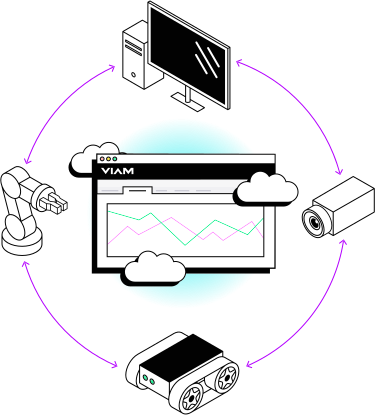
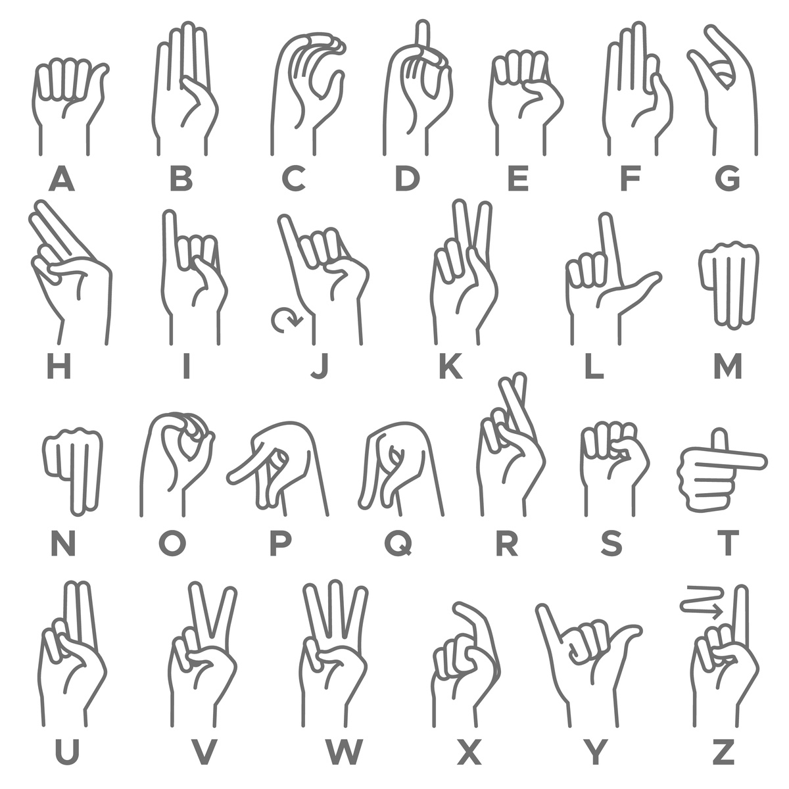
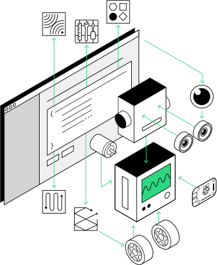

Viam is a platform that allows you to compose a smart machine or robotics project from any number of components or services through configuration.
Components typically represent physical hardware, while services represent higher-level functionality - often integrating with physical hardware or other technologies like Machine Learning, Artificial Intelligence, or external APIs.
Viam components and services that are configured as part of a machine can be used securely with APIs in popular programming languages.
This playground allows you to interact with a number of built-in and modular Viam resources running on a viam-server instance in Google Cloud Platform (GCP) through Viam's TypeScript SDK.
Note that video and audio capture is used in some demos, so your browser will ask for permission.

Click on the menu to choose a specific demo, or go to the first demo: System monitoring
Here, we are getting real-time system data from the server running Viam using a module from the Viam registry that provides a Telegraf sensor component.
You can use data collected from this or other modules to create realtime monitoring or management dashboards, and also collect and use this data with Viam's Data Management solution.
This in-browser demo is using the Viam Typescript SDK.
We are using Viam's Sensor API to retrieve system stats from the Telegraf module:
import { createRobotClient, SensorClient } from '@viamrobotics/sdk';
client = createRobotClient({...});
const system_monitor = new SensorClient(client, 'telegraf');
const stats = await system_monitor.getReadings();
// now do something with the stats like display in a table
Viam has a number of other programming language SDKs that you can use with your projects to interact with components and services.
For example, code with the same functionality would look like this in Python:
from viam.robot.client import RobotClient
from viam.components.sensor import Sensor
client = await RobotClient.at_address(...)
system_monitor = Sensor.from_robot(client, 'telegraf')
stats = await system_monitor.get_readings()
# now do something with the stats
Each Viam component and service implements an API, providing an interface that is consistent across all models of that resource.
One type of built-in service that Viam provides is a Vision Service, and all models of the Vision Service implement the rdk:service:vision API.
This API provides methods such as GetDetections() and GetDetectionsFromCamera().
Select one of the detectors below to use it with images from your device's webcam.
Each time a new class is detected, we'll use the TTS (text to speech) capability of the speech module from Viam's registry to say what is seen out-loud.
The efficientdet detector is a popular Machine Learning object detector based on the COCO open-source dataset. This detector is in tflite format and can be found on the Viam registry.
The red detector is a heuristics-based color detector and a model that is built-in to the Viam platform.
Viam's Vision API is being used to get detections.
Regardless of the model, the API method GetDetections() is called.
import { createRobotClient, VisionClient } from '@viamrobotics/sdk';
import { SpeechClient } from 'speech-service-api';
client = createRobotClient({...});
const speech = new SpeechClient(client, "speechio");
const detector = new VisionClient(client, 'coco-detector');const detector = new VisionClient(client, 'red-detector');const detector = new VisionClient(client, 'face-detector');
let detections = await detector.getDetections(image, 300, 280, 'image/jpeg');
if (detections[0] && detections[0].confidence > .6) {
let sp = await speech.toSpeech("I see a " + detections[0].className);
const audioBuffer = await decoders.mp3(sp);
play(audioBuffer);
}
Smart machines you build on the Viam platform can be extended with resources from elsewhere.
In this demo, we are using a gesture detection model
from HuggingFace managed by the YOLOv8 vision service from the Viam registry to detect letters in ASL (American Sign Language).
Try making some of the signs to spell a word or words, ending with the letter V (looks like the "peace" sign) 2 times.
Once this has been detected, we will use the Rocket 3b LLM (large language model)
deployed to our machine with the local-llm module from the Viam registry to create a response based on those words.

Detected:
Response:
import { createRobotClient, VisionClient } from '@viamrobotics/sdk';
import { ChatClient } from 'chat-service-api';
const client = createRobotClient({...});
const asl_detector = new VisionClient(client, "asl_detector");
const llm = new ChatClient(client, "llm");
let completed = false;
let last_seen = "";
let letters = "";
const chat_prefix = "Create an acronym from the letters ";
while (!completed) {
let detections = await asl_detector.getDetections(image, 300, 280, 'image/jpeg');
if (detections[0] && detections[0].confidence > .8) {
if (detections[0].className == 'V' && last_seen == 'V') {
let completion = await llm.chat(chat_prefix + letters);
completed = true;
}
else {
last_seen = detections[0].className;
letters = letters + detections[0].className;
}
}
}
Vision language models (VLMs) extend traditional LLMs by incorporating the ability to interpret images.
We can run small VLMs like Moondream (or larger VLMs!)
with Viam, in this case managed by the moondream-vision service from the Viam registry.
Choose one of the images, or capture one from your webcam.
Then, hold down the "Ask Question" button and ask a question about the photo like "Where is the dog?" aloud.
We will use the Speech module from the Viam registry to convert your question speech to text (STT),
then send that to the Moondream VLM for a response.
import { createRobotClient, VisionClient } from '@viamrobotics/sdk';
import { SpeechClient } from 'speech-service-api';
const client = createRobotClient({...});
const vlm_classifier = new VisionClient(client, "moondream-classifier");
const speech = new SpeechClient(client, "speechio");
// capture audio, in this case via browser functionality
const capturedAudioArray = captureAudio()
const speechText = await speech.toText(capturedAudioArray, "wav")
let classifications =
await vlm_classifier.getClassifications(theImage, 300, 280,
"image/jpeg", 1, {"question": speechText});
let vlmResponse = classifications[0].className;
// now we can print out the response from the VLM

Now that you've gotten hands-on with some Viam platform configurations and capabilities, we are excited to see how you might use Viam to accelerate your projects.
Viam is at its core an open source platform, and you get started with our secure in-cloud data and fleet management solutions for free (and continue with transparent consumption-based pricing).
How will you use Viam to revolutionize your hardware projects?